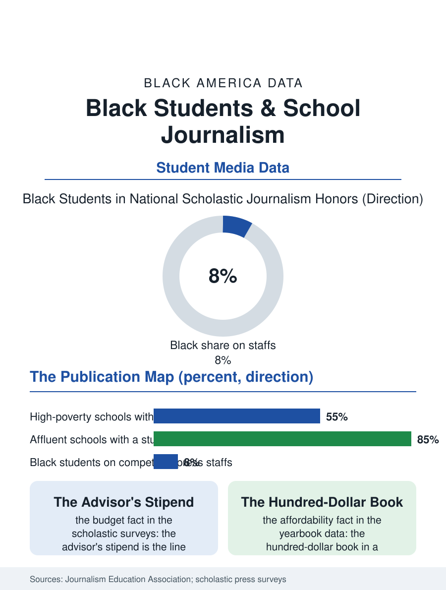

Black Education
The Student Press: Black Students and School Journalism
School newspapers are dying fastest where Black students attend, and the yearbook's price decides whose archive is complete. The student press file.

The school newspaper and the yearbook are the oldest student media in America, and they run on the same fuel as the professions they feed: time, equipment, and an advisor with a budget. Black students participate in school journalism at rates below their enrollment share in the national scholastic press data, and the schools serving Black students are the least likely to sustain a publication at all, a closure pattern the journalism education groups track with alarm. This article reads the student press file.
The Vanishing School Paper
The economics arrive first in the file. A student publication costs money the activity budget rarely holds: printing for the yearbook, cameras and software for both, and above all the faculty advisor's stipend, the line item that decides whether a publication exists in a strained budget year. The national surveys of scholastic journalism document a decades-long thinning of school newspapers, accelerating where budgets tightened, and the thinning maps onto district wealth with the fidelity of every other activity file here: affluent schools sustain papers, broadcasts, and yearbooks with multimedia staffs, while high-poverty schools, where Black students concentrate, lose the paper first and the yearbook's affordability crisis, the hundred-dollar book in a school where families count dollars, quietly redefines who appears in the record of the school year. Press freedom writes a second layer: student journalists' legal protections vary dramatically by state, a patchwork created after the Supreme Court gave administrators broad authority over school-sponsored publications, and the states without statutory protection leave student reporting subject to prior review whose chilling effect the journalism associations document in the schools least able to contest it.
Whose Stories Get Staffed
The representation data inside the publications mirror the professional newsroom file in this atlas: Black students are scarce on the staffs of competitive scholastic programs and in the national journalism competitions' winner circles, while being, in their own schools, the majority of the story subjects whenever coverage turns to discipline, athletics, or hardship, the framing asymmetry the professional media critics name. The pipeline function is the file's stakes. Journalism careers begin with clips, and the clip file is built in high school and college newsrooms; the internships file elsewhere in this atlas begins here, in whether a Black teenager ever held a press pass of their own. The counter-institutions are specific and growing: scholastic press associations running diversity fellowships and advisor training aimed at under-resourced schools, national youth media organizations that publish Black teenagers' reporting to real audiences outside school walls, and the yearbook industry's own affordability programs. The digital turn democratized the platform while stratifying the polish: any school can publish online for free, but the podcasting rigs, video programs, and design software that win the competitions and build the portfolios follow the budget line as faithfully as the printing press did.
The Record the Students Keep
There is a civic dimension the file insists on recording. The school paper is frequently the only press covering the school board's decisions about the school itself, and where it dies, the accountability coverage of the district's most local government dies with it, a loss adult journalism's collapse has made sharper as the professional papers that once covered school boards thin out. Student journalists, Black students among them in the schools where they are the story's subjects, have repeatedly produced the reporting that changed their buildings: cafeteria conditions, bathroom access, dress code enforcement patterns, curriculum fights, the local accountability journalism function operating at the smallest possible scale with the highest possible stakes for its reporters, who must sit in class with their subjects. The file closes with the yearbook's last page. The yearbook is the archive a community keeps of itself, and the affordability and staffing numbers decide whose archive is complete: which school's seniors get the full record, the candids and the club photos and the senior pages, and which school's year is remembered through a yearbook too expensive for many of its own students to own. A school press is not an ornament on an education. In the data of this file, it is an education, in research, writing, law, and public responsibility, distributed exactly as unevenly as the rest of the building's offerings, and for the same audited reasons.
More in Black Education
Black Educational Attainment: High School Parity, the College Gap
About 89 percent of Black adults hold a high school diploma and one in four holds a bachelor's degree or higher — the attainment ladder, the college completion gap, and the generational trend.
Historically Black Colleges and Universities: Enrollment and Degrees
More than 100 HBCUs enroll roughly 290,000 students and award about one in six Black bachelor's degrees — an outsized share from a small sector. The federal education data.
Black College Enrollment: 2.4 Million Students
About 2.4 million Black students are enrolled in American colleges — nearly two-thirds of them women. The NCES enrollment data by sector, level, and trend.
Source: Journalism Education Association and National Scholastic Press Association surveys; student press law center state policy tracking.